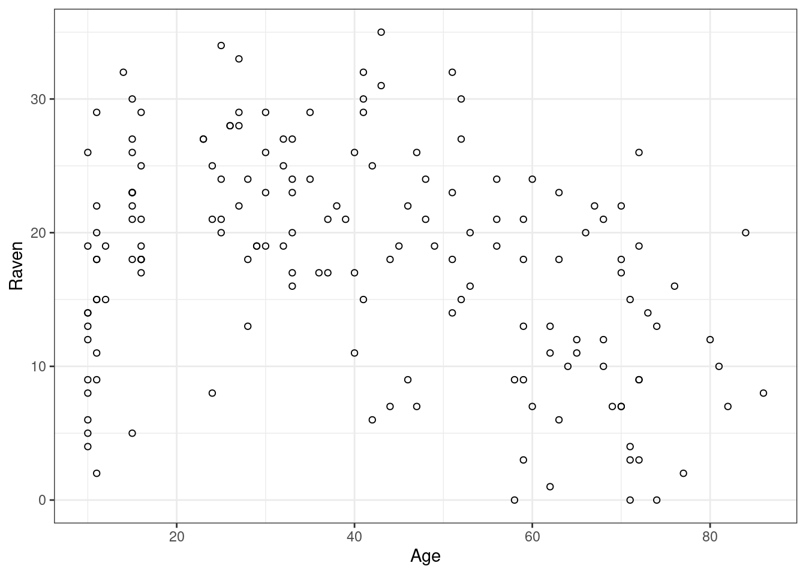
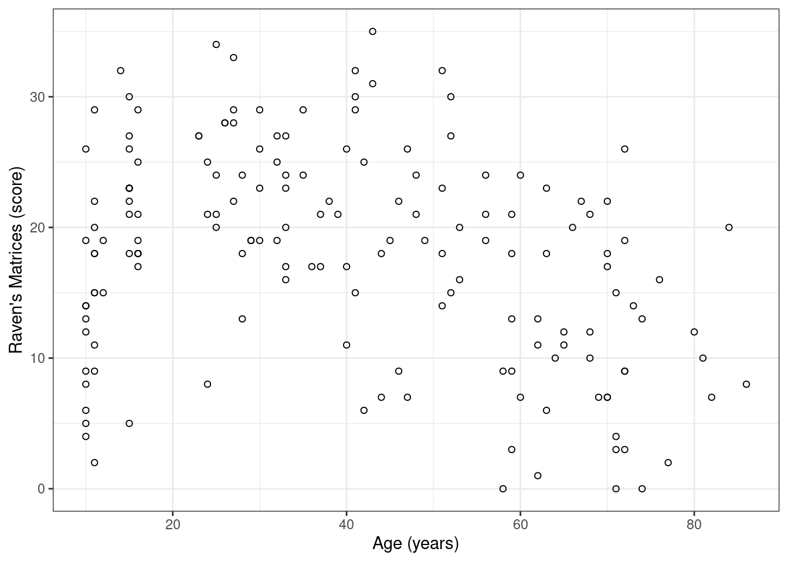
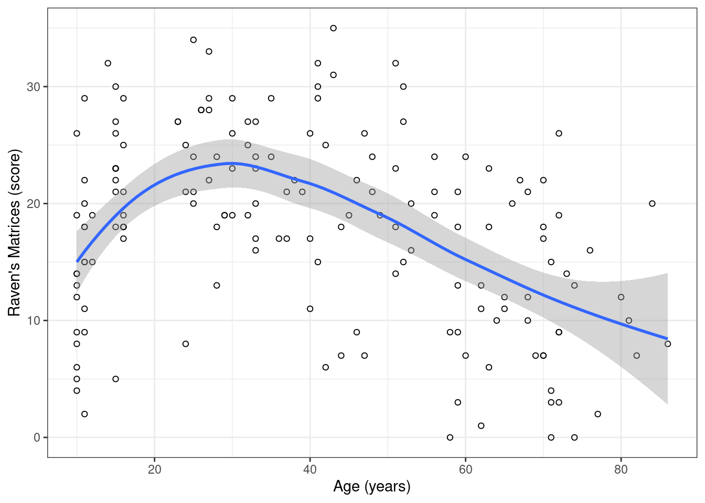
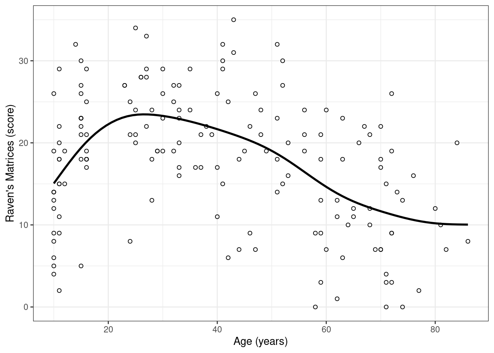
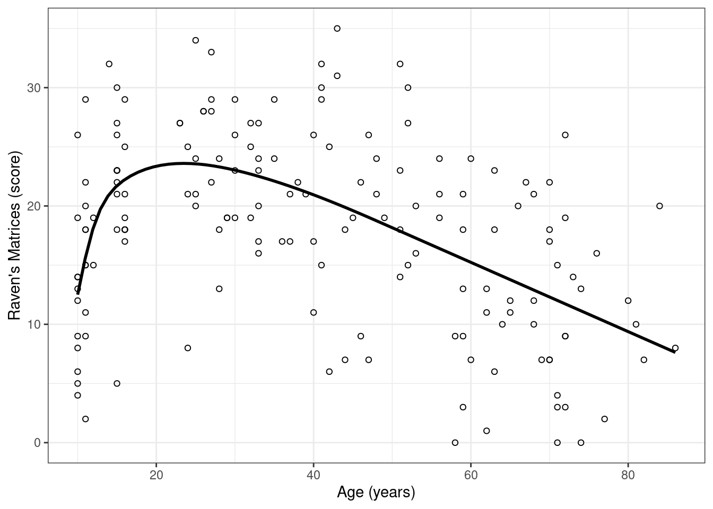

install.packages("ggplot2")Drawing a scatterplot with a non-linear trend line
This blog post is a step-by-step guide to drawing scatterplots with non-linear trend lines in R. It is geared towards readers who don’t have much experience with drawing statistical graphics and who aren’t entirely happy with their attempts in Excel.
Background
When flicking through an issue of a journal on language research or when attending a conference, chances are you’ll harvest a fair number of unclear, uninformative, for-the-record-only graphs. This is unfortunate, as a good graph serves two important purposes:
First, it can alert the researcher to aspects of the data that aren’t obvious from a purely numerical description, such as outliers, coding errors, non-linearities, and skewed distributions.
Second, while a good graph can be difficult to construct, it should – by virtue of being a good graph – be straightforward to comprehend with little guidance on the part of the author or presenter. In my view, a good graph provides a reasonably accurate picture of the main patterns in the data and of how the raw data relate to these patterns – i.e. is there a lot of variation or do the individual data points map closely onto the patterns? This makes graphs – rather than numerical descriptions or significance tests – essential for presenting research results to an audience, especially one that may not be familiar with advanced statistical techniques or even one that may not be entirely comfortable with concepts such as, say, standard deviations or confidence intervals (any casual definition of either of which is almost certainly wrong).
Since knowing how to draw a good graph is bound to be a useful skill for our students – whether they’ll become researchers themselves or will have to communicate research data to policy makers and teachers – I’ve decided I’m going to stress it more in my teaching. This blog post is a step-by-step solution to an exercise I gave my students. While they were free to use whatever program they wanted, I’m going to use R in this solution. The main reason is that I’m most familiar with it myself. In addition, the plots it produces look pretty clean and professional (I often find Excel graphs to be pig ugly, but that’s me), and it’s easier to tell you which commands you have to type at the R prompt than what you have to select and click in Excel.
Installing R and ggplot2
- Go to http://r-project.org. Download and install R. R is a free but powerful environment for conducting statistical analyses and drawing graphs.
- Go to http://www.rstudio.com. Download and install RStudio. R itself is run on a command line; RStudio provides a more organised user interface for R.
- Open RStudio. At the prompt (bottom left, the line starting with ‘>’), type the following command:
This installs a (free) add-on package, ggplot2, that provides powerful plotting capabilities. Make sure you type (or copy-paste) the command verbatim – if you type install.package("ggplot2") (without the s), R will return an error. Likewise if you type INSTALL.PACKAGES("ggplot2") (in caps).
Reading in data
The data for this exercise are available from https://janhove.github.io/datasets/sinergia.csv. Download this file and save it locally. To import it into R, enter the following command at the prompt (again verbatim):
dat <- read.csv(file.choose())A window will now open where you can navigate to the directory where you’ve saved the dataset. Select and open the dataset.
The dataset is now known in R as dat. To get an outline of the dataset, you can run the str() command with dat as its argument (the lines beginning with ‘##’ show the output of the command; you don’t have to type this yourself):
str(dat)'data.frame': 163 obs. of 10 variables:
$ Subject: int 64 78 134 230 288 326 447 527 545 550 ...
$ Spoken : int 23 19 24 12 12 20 22 9 19 22 ...
$ Written: int 25 20 12 26 9 24 25 15 14 24 ...
$ Sex : chr "female" "female" "male" "male" ...
$ Age : int 27 47 33 84 28 32 53 71 16 52 ...
$ NrLang : int 4 3 3 4 4 3 3 2 3 3 ...
$ BWDS : int 7 8 6 7 9 6 8 8 4 5 ...
$ WST : num 34 33 32 37 35 35 34 34 29 35 ...
$ Raven : int 28 26 24 20 24 19 16 15 21 15 ...
$ English: num 2.394 -0.0314 -0.4751 0.4915 1.7437 ...Drawing a scatterplot
The goal is to visualise the relationship between the self-explanatory Age variable and Raven, which contains the participants’ results on a cognitive task. The workhorse plot for showing the relationship between two continuous variables such as these is the scatterplot.
The basic idea behind a scatterplot is simple: each pair of (Age, Raven) observations is shown in an XY plane. There’s no need to group together participants by decade; you don’t have to compute the average Raven score per age group etc. – you just show the data you have.
There are a couple of ways to draw a scatterplot in R. For this tutorial we’ll use the functions in the ggplot2 package. To activate these functions, run the following command:
library(ggplot2)By default, ggplot2 draws plots on a grey background. Personally, I prefer a white background, so I tell ggplot2 to switch its default theme to black and white:
theme_set(theme_bw())To draw any plot, we need to tell the program where it can find the data and which information should go where. In this case, the data can be found in the dataset called dat, and it makes sense to plot the Age information along the x axis and the Raven scores along the y axis. (As a rule of thumb, if it’s more likely that one variable affects another variable than vice versa, put the first variable along the x axis.) All of this is defined in the ggplot function (first two lines). The third line then specifies what we want to do with these data. Here, we want to plot a point for each pair of (Age, Raven) observations. The lay-out of this graph is stored as p (this is what the <- in the first line does). To display the graph, simply type p at the prompt. The hashes introduce comments that are ignored by the program but that are useful for documenting what you’re doing.
p <- ggplot(data = dat, # specify dataset
aes(x = Age, y = Raven)) + # Age on x-, Raven on y-axis
geom_point(pch = 1) # plot points (pch = 1: circles, type '?pch' for other options)
p
This scatterplot strongly suggests the presence of a non-linear age effect: Raven performance increases up through about age 20-25 and then decreases with age. Additionally, there don’t seem to be any wildly outlying points that may be indicative of coding errors and the like. Both of these points are useful to know: the first because it indicates that common tools such as linear regression or correlations would mischaracterise the relationship between age and Raven score; the second because such outliers would’ve require us to go back to the raw data and check whether they make sense.
When this scatterplot is to be used in a publication or for a presentation, it may need a bit of polishing, though. First, while the axis labels are pretty straightforward here, that’s not always the case. To change them, we can take the plot object, p, and explicitly add an xlab() and a ylab() argument to it:
p <- p +
xlab("Age (years)") + # add label for x axis
ylab("Raven's Matrices (score)") # add label for y axix
p
Second, it may be useful to highlight the non-linear pattern in the data. To this end, we can add a scatterplot smoother to the plot. The algorithm behind such a smoother essentially fits a number of best-fitting curves to subsets of the data and then glues them together:
q1 <- p +
geom_smooth() # add scatterplot smoother
q1`geom_smooth()` using method = 'loess' and formula = 'y ~ x'
The message informs us that we didn’t specify any one algorithm for drawing the smoother, so it defaulted to the loess algorithm. The blue curve is the scatterplot smoother; the grey band about it is a 95% confidence band. For this exercise, I prefer to turn this confidence band off (se = FALSE) as it moves us into the realm of inferential statistics – for now, I’d rather stick to plotting and descriptive statistics. The appearence of the curve itself can be changed, too, e.g. by making it a bit thicker (width) and colouring it black.
Additionally, we can change the default smoothing algorithm. One alternative for drawing non-linear curves is to use a generalised additive model (see this blog post). The logic behind it is pretty similar to the one behind loess curves, though:
Update (2023-08-25): When I wrote this blog post back in 2015, the parameter that governed the line width was called width instead of linewidth.
q2 <- p +
geom_smooth(colour = "black", # black line
linewidth = 1, # slightly thicker
se = FALSE, # turn off confidence band
method = "gam", # use 'gam' instead of default (loess)
formula = y ~ s(x)) # specify gam formula
q2
By default, the gam function estimates the form of the curve by fitting so-called thin-plate regression splines. The details don’t matter here, but a disadvantage of this default is that it assumes that the curve has the same degree of ‘wiggliness’ everywhere. What this means is that the increased rate of deterioration around age 50 and the decreased rate of deterioration around age 60 needn’t be ‘there’: they may just be the result of the function trying to accommodate the fact that a constant degree of wiggliness was implicitly assumed. In other words, it may add wiggles to the end of the curve (where there may not be any) in order to be able to add wiggles to the start of the curve (where they’re clearly needed). If you have enough data, you can use so-called ‘adaptive’ smooths instead:
q3 <- p +
geom_smooth(colour = "black",
linewidth = 1,
se = FALSE,
method = "gam",
formula = y ~ s(x, bs = "ad")) # use 'adaptive' spline
q3
This graph succeeds in highlighting both the average age trend in the data and showing the scatter about that trend and doesn’t sweep any unbecoming data under the rug. I’m also pretty confident that this graph can be interpreted by experts and laypeople alike: while they may not know the algorithm behind the curve, it’s the meaning of the curve that’s of interest. And its meaning is obvious.
Software versions
devtools::session_info()─ Session info ───────────────────────────────────────────────────────────────
setting value
version R version 4.3.1 (2023-06-16)
os Ubuntu 22.04.3 LTS
system x86_64, linux-gnu
ui X11
language en_US
collate en_US.UTF-8
ctype en_US.UTF-8
tz Europe/Zurich
date 2023-08-25
pandoc 3.1.1 @ /usr/lib/rstudio/resources/app/bin/quarto/bin/tools/ (via rmarkdown)
─ Packages ───────────────────────────────────────────────────────────────────
package * version date (UTC) lib source
cachem 1.0.6 2021-08-19 [2] CRAN (R 4.2.0)
callr 3.7.3 2022-11-02 [1] CRAN (R 4.3.1)
cli 3.6.1 2023-03-23 [1] CRAN (R 4.3.0)
colorspace 2.1-0 2023-01-23 [1] CRAN (R 4.3.0)
crayon 1.5.2 2022-09-29 [1] CRAN (R 4.3.1)
devtools 2.4.5 2022-10-11 [1] CRAN (R 4.3.1)
digest 0.6.29 2021-12-01 [2] CRAN (R 4.2.0)
dplyr 1.1.2 2023-04-20 [1] CRAN (R 4.3.0)
ellipsis 0.3.2 2021-04-29 [2] CRAN (R 4.2.0)
evaluate 0.15 2022-02-18 [2] CRAN (R 4.2.0)
fansi 1.0.4 2023-01-22 [1] CRAN (R 4.3.1)
farver 2.1.1 2022-07-06 [1] CRAN (R 4.3.0)
fastmap 1.1.0 2021-01-25 [2] CRAN (R 4.2.0)
fs 1.5.2 2021-12-08 [2] CRAN (R 4.2.0)
generics 0.1.3 2022-07-05 [1] CRAN (R 4.3.0)
ggplot2 * 3.4.2 2023-04-03 [1] CRAN (R 4.3.0)
glue 1.6.2 2022-02-24 [2] CRAN (R 4.2.0)
gtable 0.3.3 2023-03-21 [1] CRAN (R 4.3.0)
htmltools 0.5.5 2023-03-23 [1] CRAN (R 4.3.0)
htmlwidgets 1.6.2 2023-03-17 [1] CRAN (R 4.3.1)
httpuv 1.6.11 2023-05-11 [1] CRAN (R 4.3.1)
jsonlite 1.8.7 2023-06-29 [1] CRAN (R 4.3.1)
knitr 1.39 2022-04-26 [2] CRAN (R 4.2.0)
labeling 0.4.2 2020-10-20 [1] CRAN (R 4.3.0)
later 1.3.1 2023-05-02 [1] CRAN (R 4.3.1)
lattice 0.21-8 2023-04-05 [4] CRAN (R 4.3.0)
lifecycle 1.0.3 2022-10-07 [1] CRAN (R 4.3.0)
magrittr 2.0.3 2022-03-30 [1] CRAN (R 4.3.0)
Matrix 1.6-0 2023-07-08 [4] CRAN (R 4.3.1)
memoise 2.0.1 2021-11-26 [2] CRAN (R 4.2.0)
mgcv 1.9-0 2023-07-11 [4] CRAN (R 4.3.1)
mime 0.10 2021-02-13 [2] CRAN (R 4.0.2)
miniUI 0.1.1.1 2018-05-18 [1] CRAN (R 4.3.1)
munsell 0.5.0 2018-06-12 [1] CRAN (R 4.3.0)
nlme 3.1-162 2023-01-31 [4] CRAN (R 4.2.2)
pillar 1.9.0 2023-03-22 [1] CRAN (R 4.3.0)
pkgbuild 1.4.2 2023-06-26 [1] CRAN (R 4.3.1)
pkgconfig 2.0.3 2019-09-22 [2] CRAN (R 4.2.0)
pkgload 1.3.2.1 2023-07-08 [1] CRAN (R 4.3.1)
prettyunits 1.1.1 2020-01-24 [2] CRAN (R 4.2.0)
processx 3.8.2 2023-06-30 [1] CRAN (R 4.3.1)
profvis 0.3.8 2023-05-02 [1] CRAN (R 4.3.1)
promises 1.2.0.1 2021-02-11 [1] CRAN (R 4.3.1)
ps 1.7.5 2023-04-18 [1] CRAN (R 4.3.1)
purrr 1.0.1 2023-01-10 [1] CRAN (R 4.3.0)
R6 2.5.1 2021-08-19 [2] CRAN (R 4.2.0)
Rcpp 1.0.11 2023-07-06 [1] CRAN (R 4.3.1)
remotes 2.4.2 2021-11-30 [2] CRAN (R 4.2.0)
rlang 1.1.1 2023-04-28 [1] CRAN (R 4.3.0)
rmarkdown 2.21 2023-03-26 [1] CRAN (R 4.3.0)
rstudioapi 0.14 2022-08-22 [1] CRAN (R 4.3.0)
scales 1.2.1 2022-08-20 [1] CRAN (R 4.3.0)
sessioninfo 1.2.2 2021-12-06 [2] CRAN (R 4.2.0)
shiny 1.7.4.1 2023-07-06 [1] CRAN (R 4.3.1)
stringi 1.7.12 2023-01-11 [1] CRAN (R 4.3.1)
stringr 1.5.0 2022-12-02 [1] CRAN (R 4.3.0)
tibble 3.2.1 2023-03-20 [1] CRAN (R 4.3.0)
tidyselect 1.2.0 2022-10-10 [1] CRAN (R 4.3.0)
urlchecker 1.0.1 2021-11-30 [1] CRAN (R 4.3.1)
usethis 2.2.2 2023-07-06 [1] CRAN (R 4.3.1)
utf8 1.2.3 2023-01-31 [1] CRAN (R 4.3.1)
vctrs 0.6.3 2023-06-14 [1] CRAN (R 4.3.0)
withr 2.5.0 2022-03-03 [2] CRAN (R 4.2.0)
xfun 0.39 2023-04-20 [1] CRAN (R 4.3.0)
xtable 1.8-4 2019-04-21 [1] CRAN (R 4.3.1)
yaml 2.3.5 2022-02-21 [2] CRAN (R 4.2.0)
[1] /home/jan/R/x86_64-pc-linux-gnu-library/4.3
[2] /usr/local/lib/R/site-library
[3] /usr/lib/R/site-library
[4] /usr/lib/R/library
──────────────────────────────────────────────────────────────────────────────